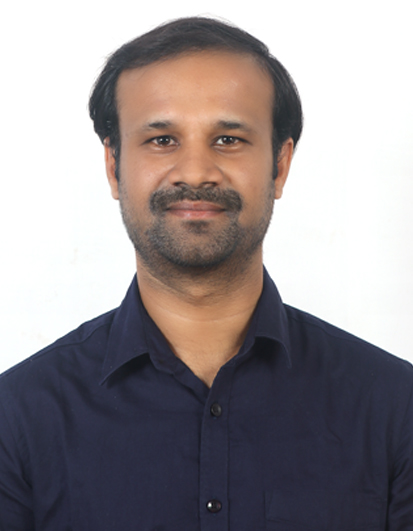

Ravi Teja Parcha

Summary
A Master's student in Computer Science at the University of Texas at Arlington,
with an expected graduation in May 2025.I have a strong foundation in IBM Mainframes technologies and experience in
Healthcare and Insurance industries, I specialize in project management,
application development, and system modernization.
Explore my background, skills, and projects through this site. Feel free to connect with me via
the contact page for collaborations or inquiries!
Education
Master of Science in Computer Science
- University of Texas at Arlington, Texas, USA
- August 2023 to May 2025 (Expected)Bachelor of Technology in Electronics and Communication Engineering
- Jawaharlal Nehru Technological University, Hyderabad, India
- September 2009 to May 2013
Work Experience
Deloitte Consulting India Pvt. Ltd.
January 2014 – June 2017
- Specialized in IBM Mainframe technologies, including COBOL, JCL, DB2, VSAM, TSO, ISPF, and CICS,
with additional knowledge in IDMS and IMS.
- Led and managed projects in the Healthcare and Insurance industries, focusing on application development, system modernization,
and migration.
- Collaborated with cross-functional teams, ensuring efficient project delivery and stakeholder management.
- Gained expertise in Agile and Waterfall methodologies, using tools like JIRA, Confluence, and ServiceNow
for project tracking and documentation.
Accenture Solutions Pvt. Ltd.
January 2014 – June 2017
- Worked on IBM Mainframe technologies, assisting in the development and maintenance of large-scale applications.
- Focused on software development and problem-solving within the Insurance industry, improving existing systems
through modernization initiatives.
- Contributed to multiple project phases, from requirement gathering to testing and deployment, while adhering to
Waterfall practices.
Skills
- Technologies: Python, Java, COBOL, JCL
- Front End: HTML
- Tools: JIRA, Service now
Other